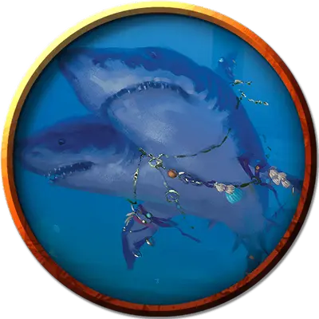

Пасть Секолы
Maw of Sekolah
Огромный Монстр, нейтрально-злой, именной НИП

Класс Доспеха 12 (природный доспех)
Хиты 114 (12к12 + 36)
Скорость 0 футов, плавая 50 футов
| мод | спас | ||
|---|---|---|---|
| СИЛ | 21 | +5 | +8 |
| ЛОВ | 12 | +1 | +1 |
| ТЕЛ | 17 | +3 | +6 |
| мод | спас | ||
|---|---|---|---|
| ИНТ | 2 | −4 | −4 |
| МДР | 14 | +2 | +2 |
| ХАР | 7 | −2 | −2 |
Навыки Атлетика +8, Восприятие +5
Чувства тёмное зрение 120 футов, пассивное Восприятие 15
Языки Сахуагинский, Телепатия 120 фт.
Опасность 7 (2900 опыта)
Бонус мастерства +3
Особенности
Подводное дыхание. Пасть Секолы может дышать только под водой.
Легендарное сопротивление (2/день). Если пасть Секолы проваливает спасбросок, он может вместо этого сделать спасбросок успешным.
Действия
Мультиатака. Пасть Секолы совершает одну атаку Укусом и одну атаку Ударом хвоста.
Укус. Рукопашная атака оружием: +8 к попаданию, досягаемость 10 футов, одна цель. Попадание: 16 (2к10 + 2) колющего урона.
Удар хвостом. Рукопашная атака оружием: +8 к попаданию, досягаемость 10 футов, одна цель. Попадание: 9 (1к8 + 5) дробящего урона.
Легендарные действия
Пасть Секолы может совершать 3 легендарных действия, выбирая из указанных ниже вариантов. Лишь одно легендарное действие может быть совершено за раз, и только в конце хода другого существа. Пасть Секолы восстанавливает истраченные действия в начале своего хода.
Обнаружение. Пасть Секолы совершает проверку Мудрости (Восприятие).
Скорость Секолы. Пасть Секолы перемещается на свою скорость.
Кормёжка (стоит 2 действия). Яростный дух Секолы мчится сквозь воду, прорываясь сквозь врагов Пасти Секолы. Каждое существо по выбору пасти в пределах 60 футов от него должно совершить спасбросок Ловкости Сл 16, получая 7 (2d6) рубящего урона при провале или половину этого урона при успехе.
Описание
Призванный из темных глубин океана с помощью ритуала и приливной магии, Пасть Секолы появляется в "Финальном противнике"как аватар голодного бога сахуагинов. Эта огромная двухголовая акула постоянно питается кормом из разумных существ, захваченных сахуагинами и принесенных в жертву в качестве дара. Жрицы сахуагинов украшают плавники Пасти Секолы лентами, украшенными драгоценными камнями и полированными черепами.